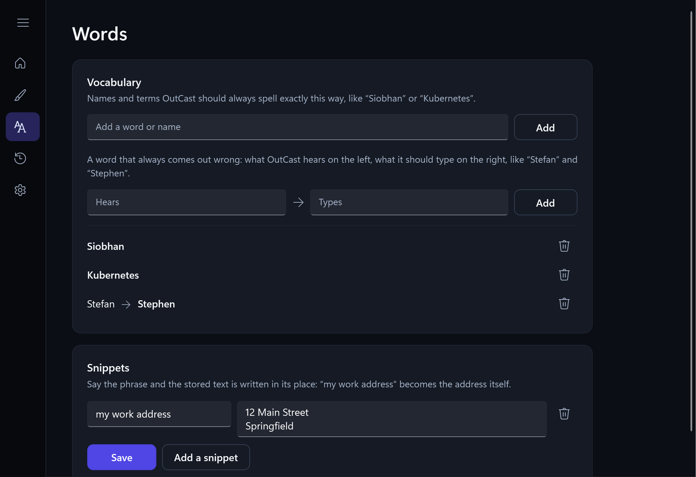
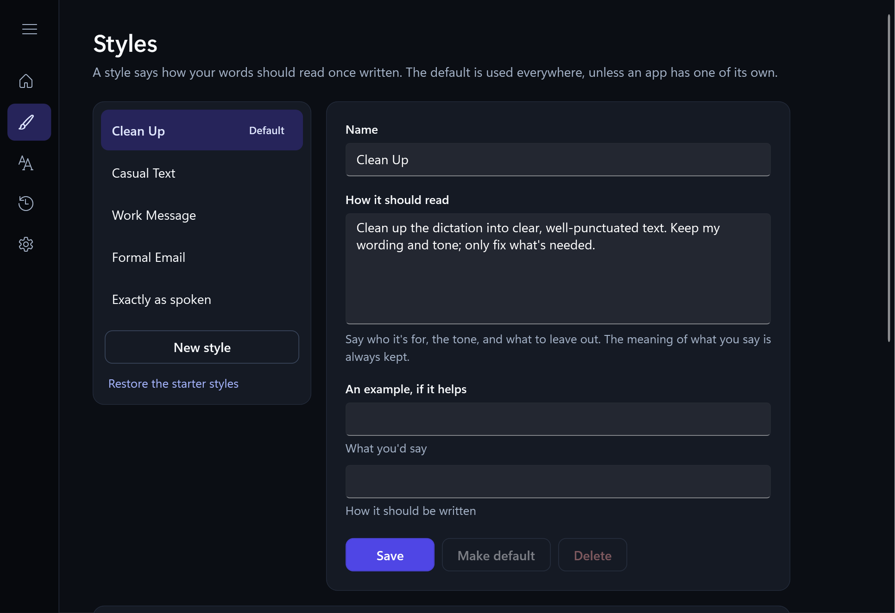
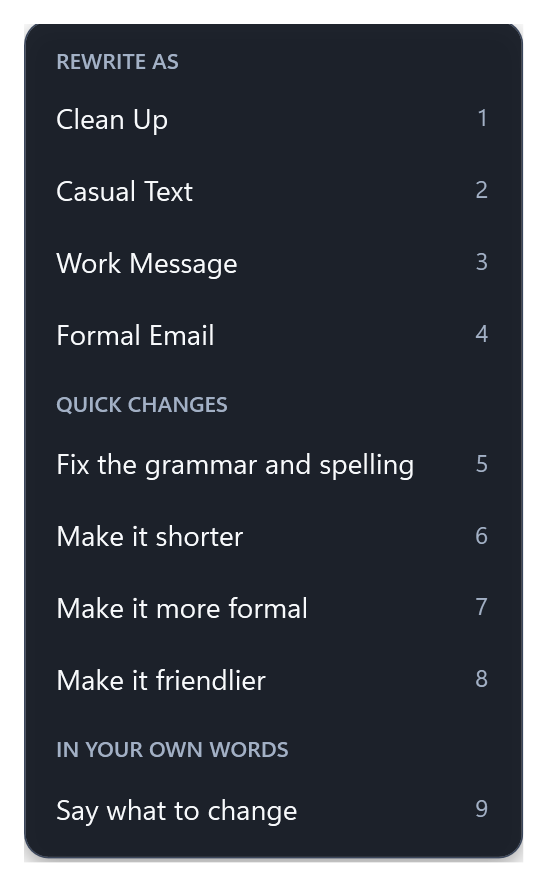
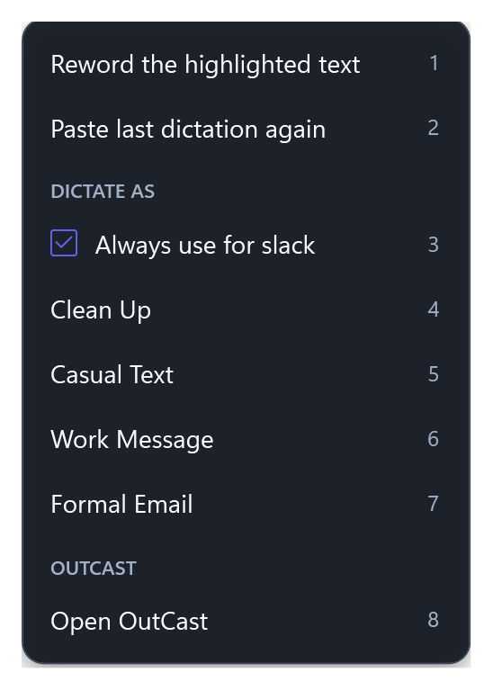
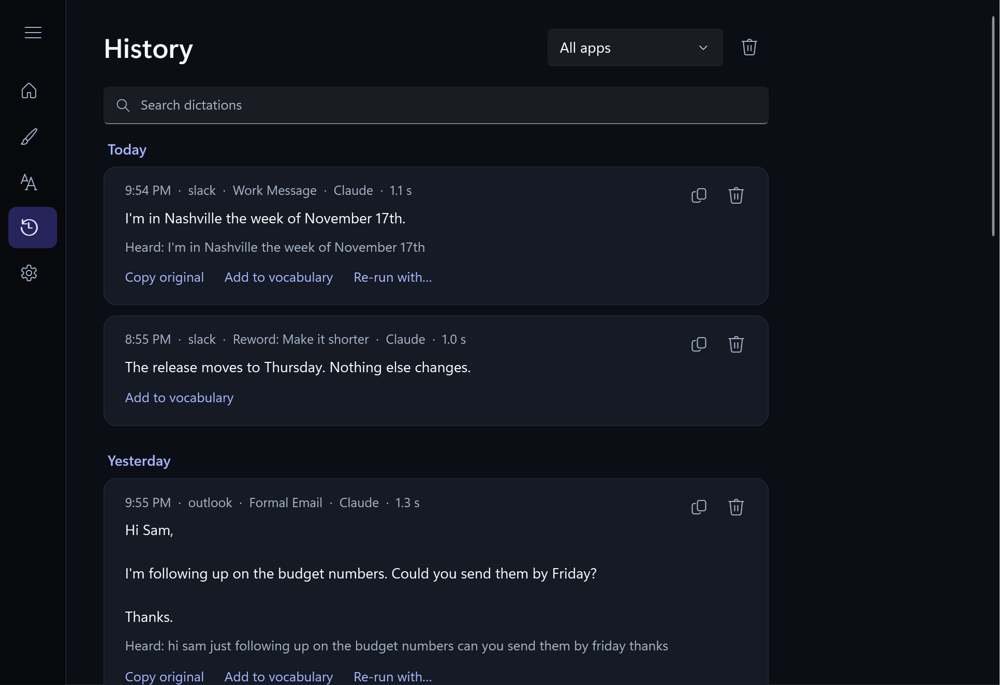
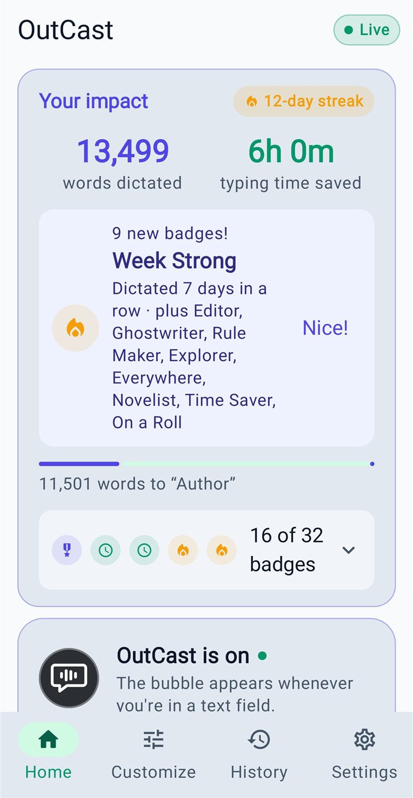
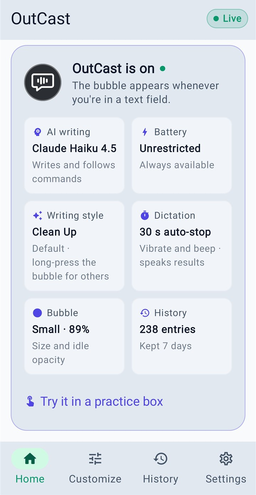
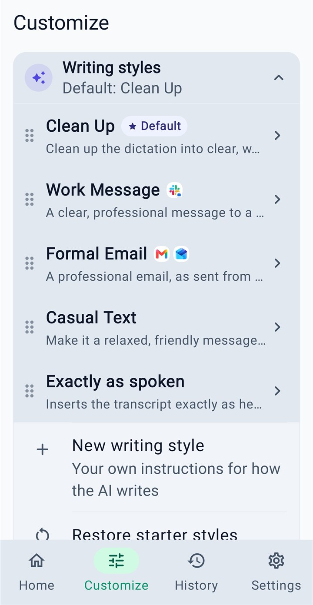
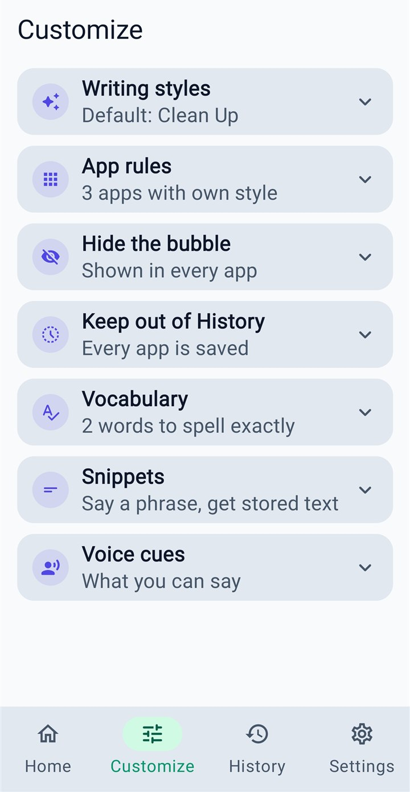
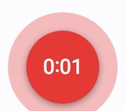

From voice to finished text, in seconds
Two AI services do the heavy lifting, using your own keys. Nothing goes through an OutCast server, because there isn't one.
Tap the bubble or press the hotkey with the cursor in any text box: a chat, an email, a document, a search field.
Groq's Whisper turns your recording into words, usually in under a second. Silence and background noise are left out.
Claude tidies it in your chosen style, reading the text around the cursor so a sentence carries on naturally. Groq stands in if Claude can't be reached.
The finished text goes in at the cursor. End with “send it” and OutCast presses Send for you.
Talk the way you talk
Ums, false starts and repeated words come out. Punctuation and capitals go in. You don't have to speak like a robot.
- Spoken cues. “New paragraph”, “bullet point”, “numbered list”, “scratch that”, “question mark”, “at sign”, “thumbs up emoji”: said, and done.
- Vocabulary. Names and terms spelt your way, every time. A word that keeps coming out wrong gets a fix: hears Stefan, types Stephen.
- Snippets. Say “my work address” and the whole address goes in, line breaks and all.
- Exactly as spoken when you want your words untouched, with no AI at all.
- Voice commands said on their own: “send it”, “undo that”, “cancel that”.

The same words, written for where they're going
- Four starter styles: Clean Up keeps your wording; Casual Text reads like a text to a friend; Work Message is direct and businesslike; Formal Email gets an opening, one topic per paragraph and a closing line.
- Make your own. Describe how it should read, add an example of what you'd say and how it should come out.
- A style per app. Slack gets Work Message, Outlook gets Formal Email, everything else gets your default. On the PC, tick Always use for an app in the bubble's menu.
- Your meaning is always kept. The AI rewrites your message; it never answers it.

Highlight anything. Make it better.
Select text in any app and press Ctrl+Alt+R. A menu opens right where you are.
- Rewrite as any of your styles.
- Quick changes in one click: fix the grammar, make it shorter, more formal, friendlier, or your own.
- Say what to change: “make this sound less annoyed”, “turn it into bullet points”.
- The new text replaces the old, keeping the spacing around it. On the phone, select text and dictate your instruction.


“…and send it.”
- Send by voice. End a message with “send it” and OutCast presses Send (or Enter) once the text is in.
- Never lost. If the window changed while OutCast was writing, the text is copied instead of typed somewhere else, and you're told.
- History. Search what you dictated, copy it again, add a word from it to your vocabulary, or re-run it in another style. Kept on your device only, for as long as you choose, and never for the apps you keep out of it.
- Phone and PC together. Back up on one, restore on the other: styles, vocabulary, snippets, settings, stats and badges, and your keys if you choose.

On your phone and on your PC
The same styles, words and writing on both, made for how each one is used.




Android

The bubble, waiting and listening.- A floating bubble appears whenever you're in a text field. Tap, talk, tap. Long-press for styles; drag it onto ✕ to cancel.
- Ask OutCast by name. “OutCast, make it shorter”, “OutCast, draft a reply saying I'll be late”, “OutCast, what time did Mike say?”
- Read it back before you send, and hear results spoken, so you needn't look.
- Reads the conversation on screen, if you switch it on, to spell names right and match the tone.
- Your impact: words dictated, time saved, daily streaks and badges.
Android 10 or newer. Installed from the download below (not the Play Store).
Windows
- Two hotkeys: Ctrl+Alt+D to dictate, Ctrl+Alt+R to reword what's highlighted. Change them to suit you.
- A bubble you can click instead and drag anywhere, in four sizes and as see-through as you like, or kept out of chosen apps such as games. It never takes the focus from what you're typing in.
- Works in any app that pastes with Ctrl+V. Esc cancels; Ctrl+Z undoes. If a paste doesn't show up, the text waits on the clipboard and you're told.
- Light or dark, following Windows or your choice, with a side panel that stays out of the way.
- Your impact: words dictated, time saved, daily streaks and the same badges as the phone.
- Shows in the tray, as the bubble, or both. Can start with Windows, and updates itself.
Windows 10 or 11, 64-bit. Per-user install, no administrator rights needed.
Your words go where you send them, and nowhere else
OutCast has no account, no server and no analytics. It talks only to the AI services you hold keys for, and to GitHub to check for updates.
| What | Where it goes |
|---|---|
| Your recording | To Groq for speech-to-text, then deleted from your device. |
| The words heard | To Anthropic (Claude) to be tidied, with a little of the text around your cursor. To Groq instead if you have no Claude key. |
| Your API keys | Encrypted on your device (Android Keystore, Windows data protection). In a backup only if you tick the box. |
| History | On your device only. Choose how long it's kept, turn it off, or keep chosen apps out of it. |
| The conversation on screen | Phone only, and only if you switch on “Read the conversation”. |
Groq's and Anthropic's own terms cover what they do with requests. Both are used through your own keys.
FAQ
What does it cost?
OutCast itself is free. It uses your own API keys: Groq's speech-to-text has a free tier for personal use, and Claude is pay-as-you-go through Anthropic, where an everyday dictation costs a fraction of a cent. Without a Claude key, Groq does the writing too, a little more plainly.
How fast is it?
The text usually appears one to three seconds after you stop talking: under a second to hear you, a second or two to write. Short messages are quickest.
Which apps does it work in?
On Android, any app with a text field. On Windows, any app that accepts a paste with Ctrl+V, except windows running as administrator, which Windows protects from other apps.
Why does the phone app need Accessibility permission?
It's how Android lets OutCast see which text box you're in, show the bubble there, and type into it. OutCast uses it for that and nothing else.
Which languages?
English, for now.
Can I move my setup between phone and PC?
Yes. Back up on one and restore on the other: styles, vocabulary, snippets, settings, stats and badges travel in one file, with your dictation history if you choose, and your API keys too if you tick the box (they go in as plain text, so keep that file private).
Windows warned me about the download. Is it safe?
The Windows installer isn't code-signed yet, so SmartScreen may ask the first time: choose More info, then Run anyway. On Android, allow your browser or file manager to install apps when asked. After that, both apps update themselves from this page's releases.
Stop typing. Start talking.
Free. Android 10+ and Windows 10/11. Add a free Groq key and you're talking in a minute; add a Claude key for the best writing.